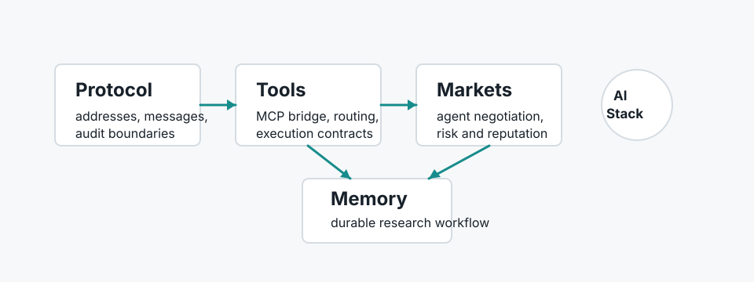

From INVOKE to tools/call: a thin bridge between agent protocols and MCP
A systems note on separating protocol routing from concrete tool transports, using ALN / Foundation Protocol and MCP as the case study.
Research direction
My current work sits between AI agents and software systems: protocol layers for agent communication, MCP-style tool bridges, task environments for negotiation, and research workflows that preserve decisions instead of leaving them inside chat history.

I am developing an AI work portfolio around agent infrastructure. The unifying question is: how should autonomous systems call tools, negotiate with other agents, escalate to humans, and leave an evidence trail that engineers can trust?
I care about clean abstractions, typed interfaces, compact implementation, and research notes that turn implementation choices into reusable knowledge.
A systems note on separating protocol routing from concrete tool transports, using ALN / Foundation Protocol and MCP as the case study.
A product-and-systems note based on an agentic second-hand electronics marketplace with risk inspection, price estimation, deal state, and human escalation.
A note on using structured weekly reports, metadata, and decision logs to make AI-assisted engineering compound over time.
Agent protocol routing, tool entities, `INVOKE` payloads, MCP client adapters, and transport boundaries.
Read noteEnd-to-end marketplace MVP with agent desk, deal room, network view, risk checks, pricing, contracts, and reputation.
Read noteCodex-to-Obsidian reporting workflow that turns collaboration history into structured project knowledge.
Read note